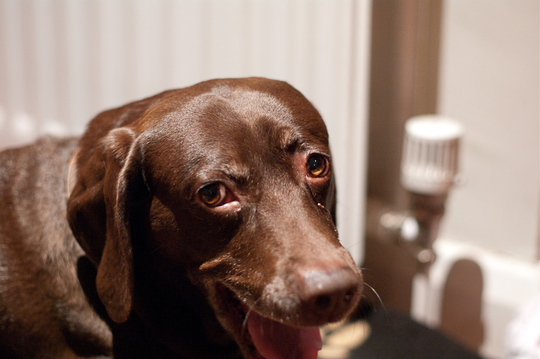
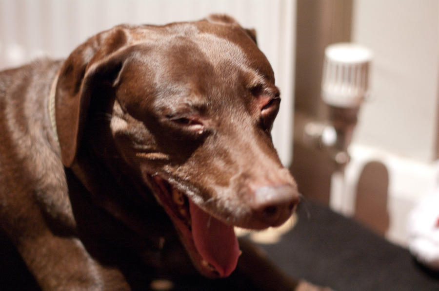
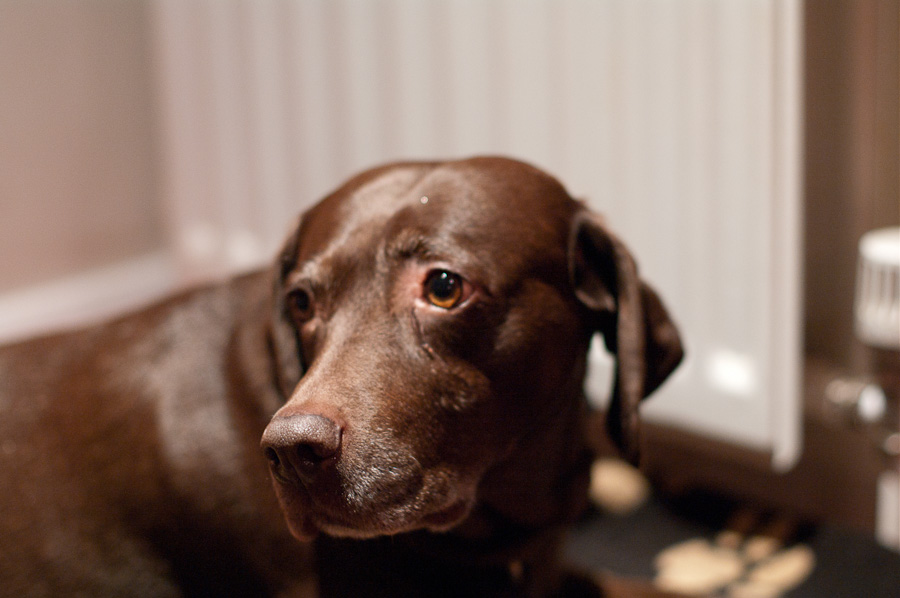

<div class="container">
  <div id="photo_gallery">
    
    
    
  </div>
</div>

<script src="http://ajax.googleapis.com/ajax/libs/jquery/1.7.1/jquery.min.js"></script>
<script src="galleria/galleria-1.2.6.min.js"></script>
<script src="galleria/plugins/flickr/galleria.flickr.min.js"></script>
<script>
    Galleria.loadTheme('galleria/themes/my_theme/galleria.my_theme.js');
    $("#photo_gallery").galleria({
        transition: 'flash',
        autoplay: 4000,
        showInfo: false,
        imageCrop: true,
        flickr: 'search:dogwalk',
    });
    
    $(".container").resize(function() {
      console.log($("#photo_gallery").width());
    });
</script>